Instruction requires genuine reasoning; target is a correct, non-trivial answer.
#2
query
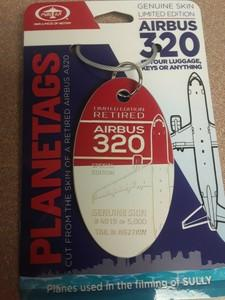
target
Instruction: What's a small souvenir I could get that's made from a piece of this?
Target caption & rationale
Target caption: a close-up photo of a small, detailed scale model of a vintage airplane on a wooden table
Rationale: The query shows a large aircraft; the target is a luggage tag made from the 'genuine skin' of a retired airplane. The reasoning is a part-to-whole relationship where a small piece of the large object is repurposed into a collectib…
#14
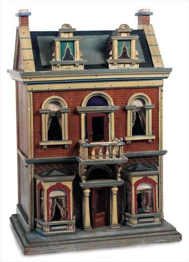
query
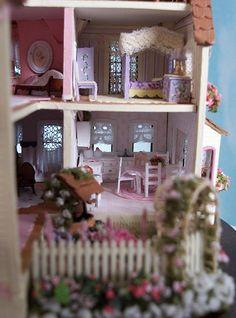
target
Instruction: What does it look like once you step inside?
Target caption & rationale
Target caption: a close-up photo of a tiny wooden chair and a miniature table inside a dollhouse room
Rationale: The query is the exterior of a dollhouse; the instruction asks for the interior view, which is a concealed aspect of the same entity, making the target a distinct perspective from the query.
#22
querytarget
Instruction: What could they serve to celebrate the occasion?
Target caption & rationale
Target caption: a close-up photo of a red, white, and blue celebratory cake with sparklers and frosting
Rationale: The query shows people celebrating a US holiday; the target is a festive cake, a distinct object that is a natural accompaniment to such a celebration, and cannot be determined without the query's context.
#33
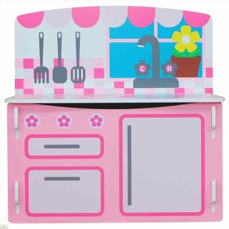
query
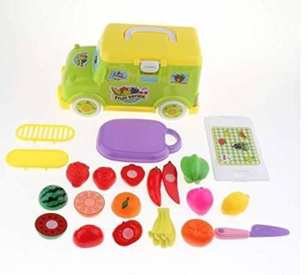
target
Instruction: What would I need to put inside this to make it playable?
Target caption & rationale
Target caption: a close-up photo of a colorful plastic toy food set with miniature fruits and vegetables
Rationale: The query is a toy kitchen set which is empty; the actual target is a set of toy food, a distinct complement that provides the necessary 'ingredients' to use the kitchen, satisfying the need for playability.
#42
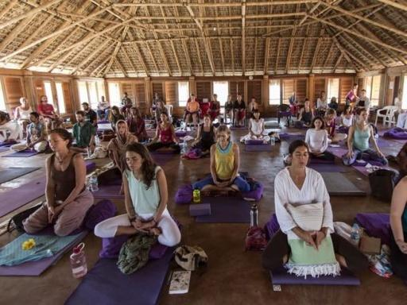
querytarget
Instruction: What could be used to set the mood for this session?
Target caption & rationale
Target caption: a close-up photo of a small bowl of incense sticks and a lit candle on a wooden table
Rationale: The query shows a group meditation or yoga session; the actual target is sensory tools (candle and incense) used to create a calming atmosphere for such activities, which are distinct objects from the people and the room.
#57
query
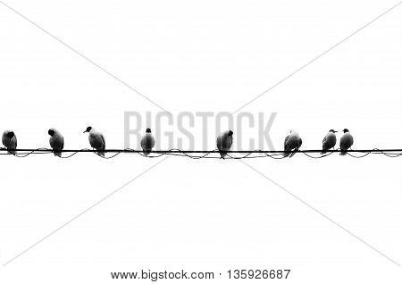
target
Instruction: What would happen if these failed to do their job?
Target caption & rationale
Target caption: a close-up photo of a flock of crows perched on a wooden fence
Rationale: The query shows scarecrows, whose purpose is to deter birds; the target shows a flock of birds, which is the natural consequence/result of the scarecrows failing. The target is a distinct entity (birds) rather than more scarecrows…
#70
querytarget
Instruction: What else would typically be associated with this activity for the holiday?
Target caption & rationale
Target caption: a close-up photo of a chocolate Easter bunny wrapped in gold foil
Rationale: The query shows eggs being dyed for Easter; the target is a bunny, a distinct symbol of the same holiday, making it a natural conceptual association rather than a visual match.
#99
querytarget
Instruction: What is the intended result of using this?
Target caption & rationale
Target caption: a well-manicured hedge wall in a lush garden
Rationale: The query shows a person holding hedge shears (a tool for trimming); the actual target is a manicured hedge, which is the distinct outcome of using that tool.
⚠ Issue
Non-identifiable
4 / 101 · 4.0%
Query subject can't be reliably identified, so the reasoning link is unverifiable.
#8
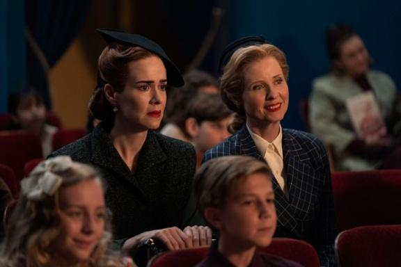
querytarget
Instruction: What are they watching?
Target caption & rationale
Target caption: A wide shot of a cinematic movie screen in a dark theater showing a film
Rationale: The query shows people in a theater setting looking forward with attention; the target is the screen they are watching, which is a distinct object that explains the subjects' gaze and posture.
#34
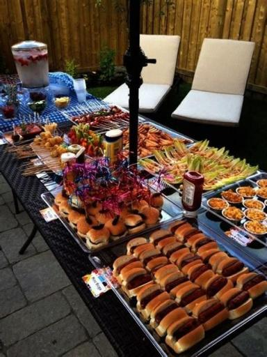
query
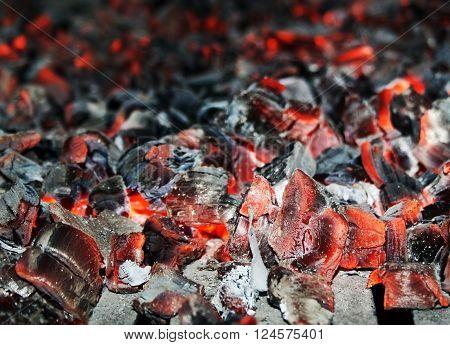
target
Instruction: How was all of this prepared?
Target caption & rationale
Target caption: a close-up photo of a metal charcoal grill with glowing red embers and a grill grate
Rationale: The query shows a large spread of grilled foods (hot dogs, skewers); the target shows glowing charcoal embers, which is the distinct mechanism used to cook those foods, bridging from the result back to the source of heat.
#67
query
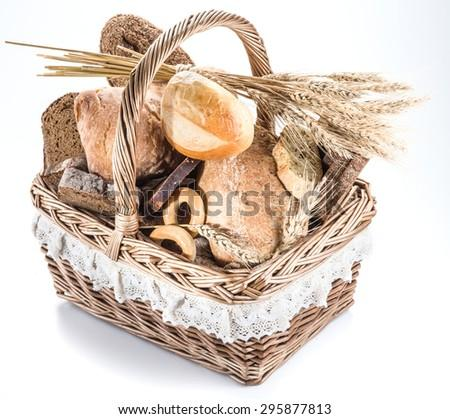
target
Instruction: What would she be carrying in her basket for the journey?
Target caption & rationale
Target caption: a close-up photo of a basket filled with fresh baked bread and a bottle of wine on a wooden table
Rationale: The query image depicts a character clearly modeled after Little Red Riding Hood; the actual target is a basket of bread, a distinct object that serves as a key plot element/accessory associated with that specific fairy tale chara…
#81
querytarget
Instruction: What would I need to bring with me to travel to a place like this?
Target caption & rationale
Target caption: a close-up photograph of a passport with entry and exit stamps from various countries
Rationale: The query shows a distant, exotic landscape (the Pitons in St. Lucia), which implies the need for international travel documentation; the target is a passport, a distinct object necessary for such a trip.
⚠ Issue
Size mismatch
5 / 101 · 5.0%
Query and target differ in scale / level of detail / texture in a way that breaks the pair.
#1
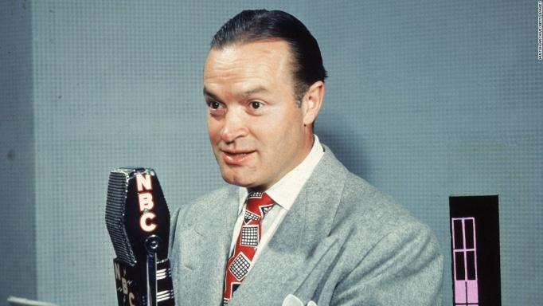
query
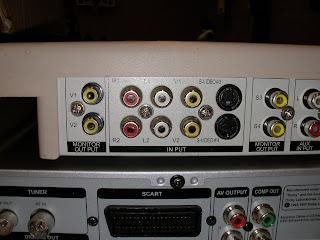
target
Instruction: Where would the sound from this be processed before it reaches the listener?
Target caption & rationale
Target caption: a close-up of a vintage professional radio broadcast mixer with sliders and knobs
Rationale: The query shows a person speaking into a broadcast microphone; the target is the input panel of a mixing console (the processing hardware), which is a distinct object essential for the function shown in the query.
#7
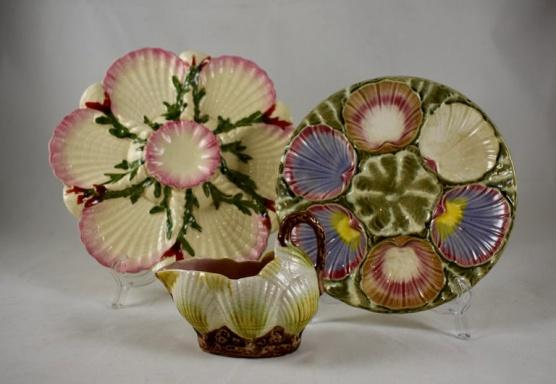
query
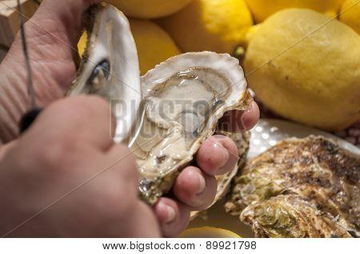
target
Instruction: What was the inspiration for the design of these?
Target caption & rationale
Target caption: a close-up photo of a raw oyster on a half-shell with a lemon wedge
Rationale: The query shows ceramic plates shaped like seashells; the target shows real oysters/shells, which are the biological inspiration for the query's aesthetic, representing a move from an imitation object to the original natural sourc…
#28
querytarget
Instruction: What could I feed these to keep them healthy?
Target caption & rationale
Target caption: a close-up photo of a pile of grain and corn kernels in a wooden bowl
Rationale: The query shows small chickens; the actual target is corn/grain, which is a distinct food source these animals require, establishing a diet-based reasoning link.
#50
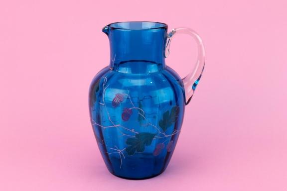
query
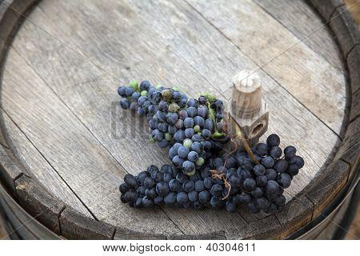
target
Instruction: What could I put inside this to match the design?
Target caption & rationale
Target caption: a close-up photo of a cluster of fresh purple blackberries on a wooden table
Rationale: The query is a pitcher with a grape/vine design; the target is actual grapes, a distinct object that matches the thematic decoration of the pitcher.
#61
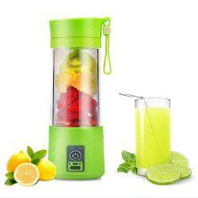
query
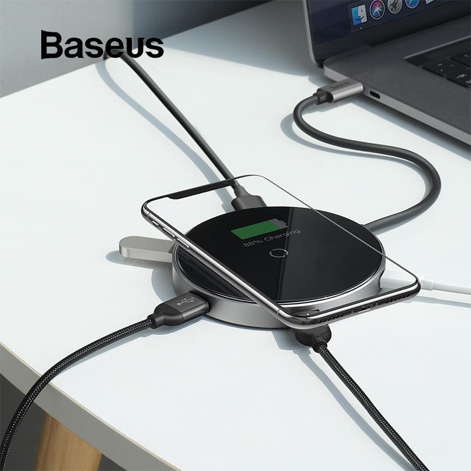
target
Instruction: What would I use to power this up once it runs out?
Target caption & rationale
Target caption: a close-up photo of a small, electric charging base with a USB cable plugged into it
Rationale: The query is an electric blender, which requires electricity to function; the target is a wireless charging pad, a distinct object that provides the necessary power source, creating a functional dependency link.
⚠ Issue
Text shortcut
19 / 101 · 18.8%
Instruction leaks the answer or can be solved from text alone without the query image.
#0
query
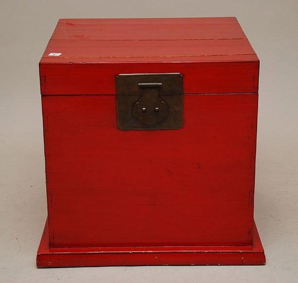
target
Instruction: Where would this person's name go on election day?
Target caption & rationale
Target caption: a close-up photograph of a ballot box with a slot on top in a polling station
Rationale: The query shows a political figure; the instruction asks where their name would be placed during an election, leading to a ballot box, which is a distinct object and a logical systemic consequence of the query's subject.
#5
query
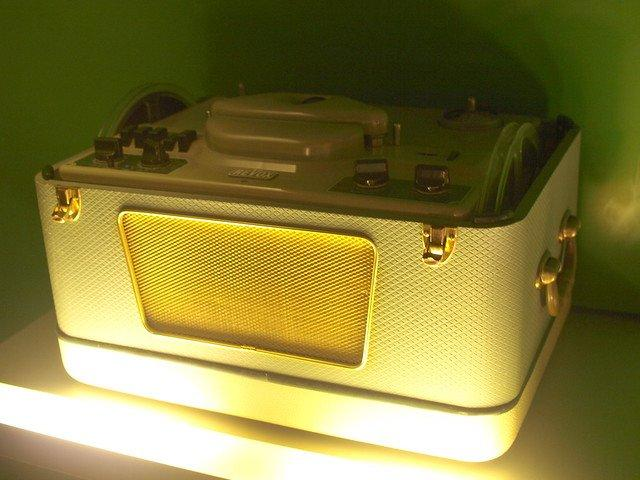
target
Instruction: How would I be able to hear this more loudly in a room?
Target caption & rationale
Target caption: a close-up photo of a guitar amplifier with various knobs and a speaker grill
Rationale: The query shows a live musical performance with a microphone and guitar; the target is an amplifier, which is the distinct device required to increase the volume of those instruments, creating a logical cause-and-effect link.
#9
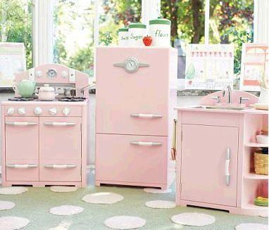
querytarget
Instruction: What would a child use to pretend they are preparing a meal here?
Target caption & rationale
Target caption: a close-up photo of a colorful plastic toy food set containing miniature fruits and vegetables
Rationale: The query shows a toy kitchen, and the target is a set of toy food; since you cannot 'cook' in a toy kitchen without ingredients, the request for items to prepare a meal retrieves the food set, which is a distinct complement to th…
#21
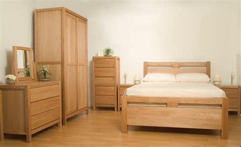
query
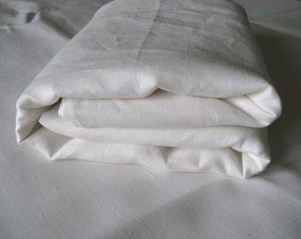
target
Instruction: What would I need to put on this to make it comfortable for sleeping?
Target caption & rationale
Target caption: a close-up photo of a neatly folded stack of cotton t-shirts and sweaters
Rationale: The query shows a bedroom set with a bed; the target is a set of linens (sheets), which is a distinct complementary object necessary for the function of the bed.
#23
query
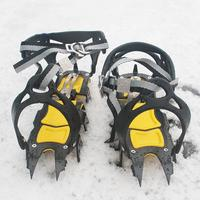
target
Instruction: What would I need on my boots to safely navigate this terrain?
Target caption & rationale
Target caption: a close-up photo of a heavy-duty ice axe and crampons resting on a rocky surface
Rationale: The query shows a snowy, glacial environment; the target is crampons, which are the specific tools required for traction in such conditions, providing a distinct functional answer to the environmental constraint.
#38
querytarget
Instruction: Where would these be placed to honor the deceased?
Target caption & rationale
Target caption: a colorful sugar skull altar with marigolds, candles, and photos of deceased loved ones
Rationale: The query shows decorative skulls associated with Day of the Dead; the target is an altar (ofrenda), the distinct location where these items are used as part of the ritual.
#48
query
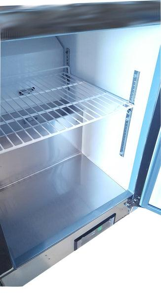
target
Instruction: Where would the fresh ingredients for this be kept?
Target caption & rationale
Target caption: a close-up photo of a stainless steel commercial walk-in refrigerator interior with shelves of organized ingredients
Rationale: The query shows a chef preparing food in a kitchen; the target is the interior of a commercial refrigerator, a distinct location where the necessary ingredients are stored, linked by the functional need for food preservation.
#55
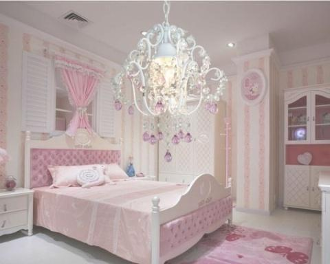
query
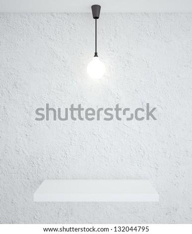
target
Instruction: What would be a much more minimal alternative for the lighting in here?
Target caption & rationale
Target caption: a close-up photo of a light switch on a white wall
Rationale: The query shows a highly ornate, maximalist bedroom; the target is a stark, minimalist light fixture, creating a contrast-based reasoning link that is distinct from the query's style.
#56
query
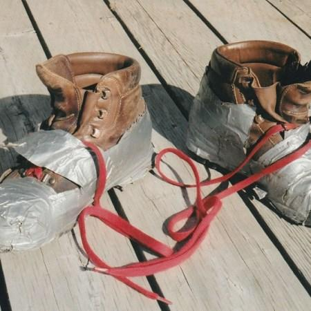
target
Instruction: What would I have to put on my feet to walk through the muck here?
Target caption & rationale
Target caption: a close-up photo of a person's muddy hiking boots resting on a wooden porch
Rationale: The query shows a swampy, muddy environment; the target is specialized waterproof footwear (boots) necessary for that terrain, which is a distinct object required by the environment shown in the query.
#58
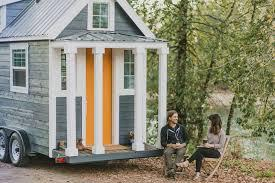
query
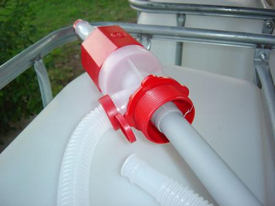
target
Instruction: How would this be powered for heating and cooking if it's off the grid?
Target caption & rationale
Target caption: a close-up photo of a propane tank and a regulator valve connected to a hose
Rationale: The query is a tiny house on wheels, which typically requires independent utilities; the actual target is a propane tank and regulator, a distinct piece of infrastructure used to provide fuel for such a dwelling.
#60
query
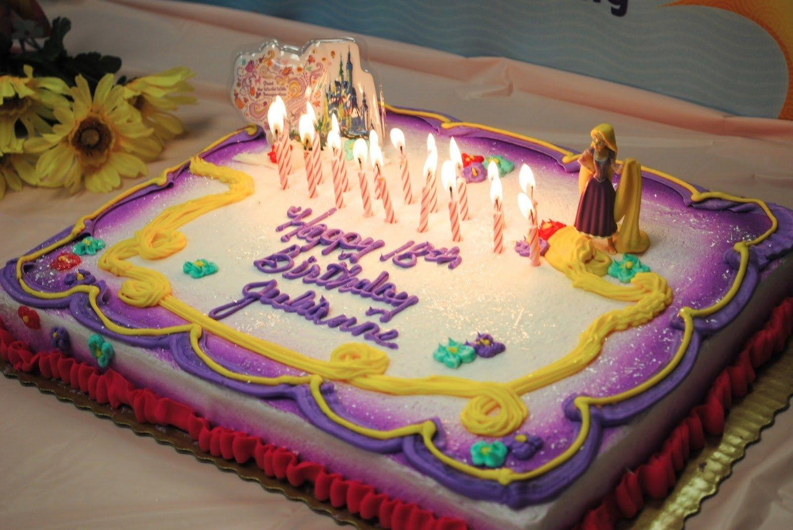
target
Instruction: What would you bring to celebrate this little one's special day?
Target caption & rationale
Target caption: a close-up photo of a colorful child's birthday cake with lit candles on a table
Rationale: The query shows a young child, which implies a birthday celebration; the target is a birthday cake, a distinct object necessary for that event, and is not just another child.
#62
querytarget
Instruction: What would I have used to prepare the dough for these?
Target caption & rationale
Target caption: a close-up photo of a traditional wooden rolling pin on a floured kitchen counter
Rationale: The query shows finished baked tarts; the target shows a rolling pin and raw dough, which are the essential preparation tools and materials required to create the crusts of the tarts, making the target a distinct step in the proce…
#69
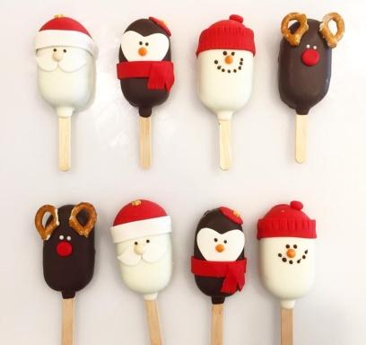
query
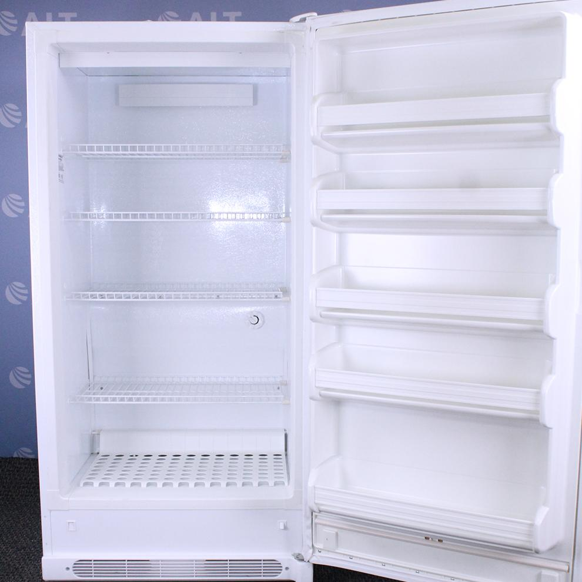
target
Instruction: Where would I keep these to make sure they don't melt?
Target caption & rationale
Target caption: a close-up photo of a freezer shelf with various frozen food packages
Rationale: The query shows frozen treats (cakesicles) that require cold storage to maintain their form; the target is a freezer, a distinct object that solves the need for preservation, making it the logical answer.
#71
query
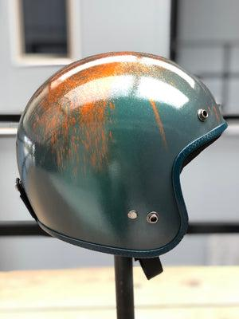
target
Instruction: What should they be wearing on their heads for safety?
Target caption & rationale
Target caption: a close-up of a bicycle helmet resting on a wooden table
Rationale: The query shows children and adults riding bicycles without protection; the instruction asks for the safety equipment needed for this activity, leading to a helmet, which is a distinct protective object not present in the query.
#77
querytarget
Instruction: What should I bring along to make sure I don't get burned while visiting this place?
Target caption & rationale
Target caption: A close-up photo of a bottle of sunscreen on a beach towel
Rationale: The query shows a sunny beach, and the instruction identifies a need for protection from the sun, leading to sunscreen, which is a distinct object not present in the query.
#86
query
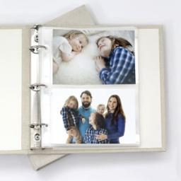
target
Instruction: How could I preserve a memory of this moment for years to come?
Target caption & rationale
Target caption: a close-up photo of a family photo album with open pages showing old photographs
Rationale: The query shows a family outing (the moment); the target is a photo album, a distinct object used to store and preserve such memories, creating a functional reasoning link.
#92
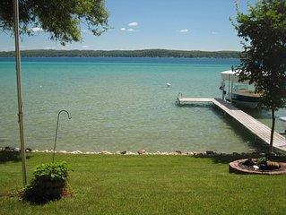
querytarget
Instruction: What would I need to keep a boat from drifting away from this spot?
Target caption & rationale
Target caption: a close-up photo of a metal boat anchor resting on a sandy beach
Rationale: The query shows a dock and water, establishing a boating context; the target is an anchor, a distinct tool needed to secure a vessel in such an environment, and the request uses the query's location to pin down the specific need.
#93
querytarget
Instruction: What should I have applied to my skin before doing this?
Target caption & rationale
Target caption: a close-up of a bottle of sunscreen with a white cap on a sandy beach
Rationale: The query shows people sunbathing on a beach; the target is sunscreen, a distinct product required for the activity shown in the query to prevent burns.
#98
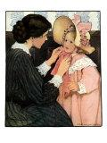
query
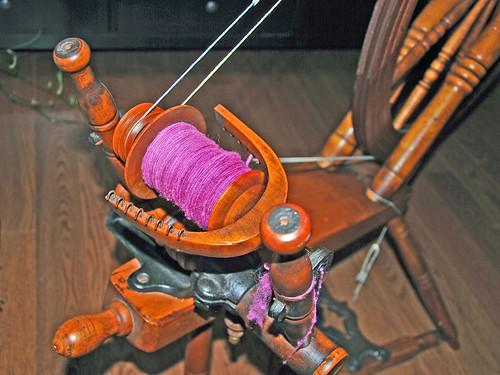
target
Instruction: What would have been used to create the fabric for these?
Target caption & rationale
Target caption: a close-up photo of a vintage sewing machine with a spool of thread
Rationale: The query shows people in ornate period clothing; the target is a spinning wheel, the tool used to create the yarn/fabric for such garments. The target is a distinct object (a machine) rather than a person or clothing.
⚠ Issue
Complete mismatch
3 / 101 · 3.0%
Query and target are unrelated; no plausible reasoning connects them.
#4
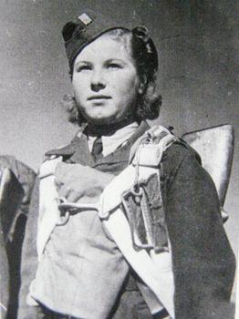
query
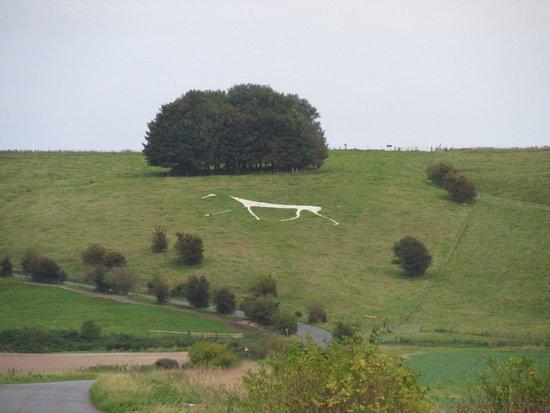
target
Instruction: What would this look like if it were deployed on the ground?
Target caption & rationale
Target caption: a white silk parachute spread out on a grassy field
Rationale: The query shows a person wearing a parachute harness; the instruction asks for the state of that equipment when deployed, leading to the target image of a parachute spread across a field, which is a distinct state/form of the obje…
#27
query
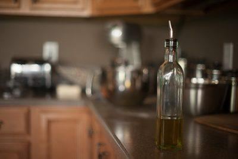
target
Instruction: What can I make from this to use in my cooking?
Target caption & rationale
Target caption: a bottle of extra virgin olive oil on a kitchen counter
Rationale: The query shows an olive; the target is olive oil, a processed product derived from it. The transition from raw fruit to a cooking ingredient is a natural reasoning step, and the oil is a distinct object from the olive.
#68
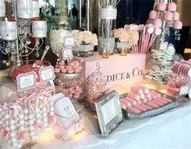
querytarget
Instruction: What would be needed to serve these to the guests?
Target caption & rationale
Target caption: a close-up photo of a silver cake server and a cake knife resting on a white linen tablecloth
Rationale: The query shows a variety of desserts (candy bar), which implies a need for serving tools; the target is a cake server/knife, a distinct tool used for the purpose of serving such items.
⚠ Issue
Same combo
14 / 101 · 13.9%
Query and target are near-duplicates or the same object/scene combination.
#30
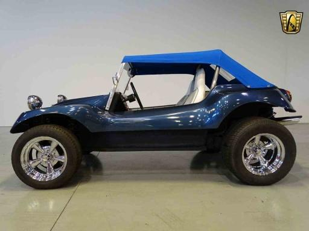
query
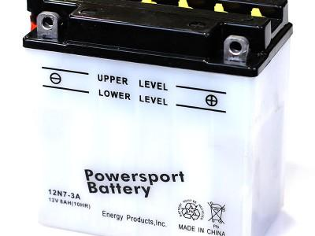
target
Instruction: What would I need to replace if this won't start?
Target caption & rationale
Target caption: a close-up photo of a car battery and its terminals
Rationale: The query shows a vehicle, and the instruction presents a failure state (won't start); the target is a battery, which is the distinct component responsible for starting the vehicle.
#26
querytarget
Instruction: What would usually be served as a center-piece for the event these figures represent?
Target caption & rationale
Target caption: a close-up photo of a tiered white wedding cake with floral decorations
Rationale: The query shows wedding cake toppers, which represent a wedding event; the target is a wedding cake, a distinct object that serves as the center-piece for that event.
#25
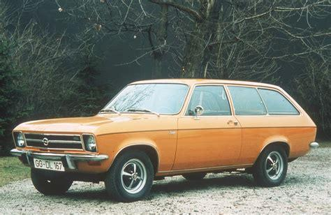
query
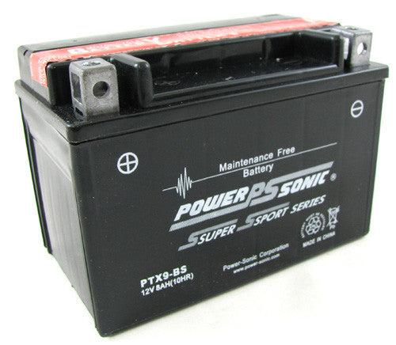
target
Instruction: What's the part I'd need to replace if this won't start?
Target caption & rationale
Target caption: a close-up photo of a car battery with red and black terminals in an engine bay
Rationale: The query shows a car, and the instruction identifies a failure state (won't start), which reasons to a battery as a primary cause; the battery is a distinct component essential for the car's operation.
#31
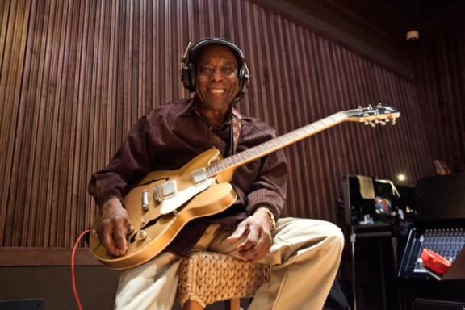
query
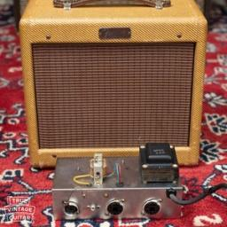
target
Instruction: What do I need to plug this into so others can hear it?
Target caption & rationale
Target caption: a close-up photo of a guitar amplifier with control knobs and a fabric grille
Rationale: The query shows an electric guitar, which requires an amplifier to produce audible sound for an audience; the target is an amplifier, a distinct piece of equipment that satisfies this functional need.
#40
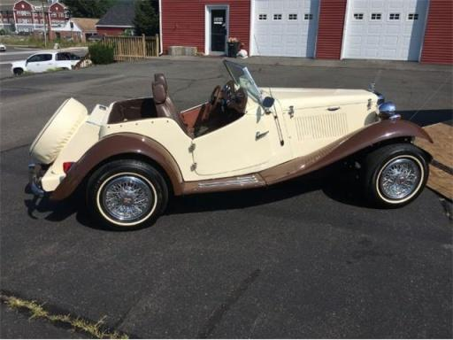
querytarget
Instruction: What does the machinery under the hood of this look like?
Target caption & rationale
Target caption: a close-up photo of a vintage car engine with chrome parts and a carburetor
Rationale: The query is a vintage car; the target is a close-up of its engine, which is a concealed aspect of the subject. Reasoning from the whole vehicle to its internal mechanism provides a distinct new element.
#15
querytarget
Instruction: What does the internal mechanism that powers this look like?
Target caption & rationale
Target caption: a close-up photo of a car engine bay with mechanical components and wires
Rationale: The query is a complete car; the target is a close-up of its internal mechanical engine/transmission components, representing a concealed aspect (interior mechanism) of the same entity.
#51
querytarget
Instruction: What does the inside of the place where this is found look like?
Target caption & rationale
Target caption: a wide-angle interior shot of a gothic cathedral nave with rows of wooden pews and a high vaulted ceiling
Rationale: The query is a stained-glass window, which is a component of a church; the target is the interior nave of a church, providing a part-to-whole relationship that retrieves a distinct environment rather than another window.
#72
querytarget
Instruction: What does it look like under the hood of this?
Target caption & rationale
Target caption: a close-up photo of a classic car engine with a chrome air cleaner and polished manifolds
Rationale: The query shows the exterior of a classic car; the target is a close-up of its engine, which is a concealed aspect of the same entity, making it a distinct answer reached by reasoning about the vehicle's structure.
#75
querytarget
Instruction: What would be used to create these?
Target caption & rationale
Target caption: A vintage sewing machine on a wooden table with spools of thread and fabric scraps
Rationale: The query shows finished vintage dresses; the target is a sewing machine, the tool used for their production. The target is a distinct object (tool) rather than another garment, making the link a functional production relationship…
#84
querytarget
Instruction: What do I need to apply to this before heading down to the water?
Target caption & rationale
Target caption: a close-up photo of a small pile of white surf wax on a wooden table
Rationale: The query shows a person with a surfboard; the target is surf wax, a distinct accessory required to create grip on the board, so the 'apply' request retrieves the necessary tool rather than another surfer or beach scene.
#89
querytarget
Instruction: What would be served to guests to celebrate this event?
Target caption & rationale
Target caption: a close-up photo of a tiered white wedding cake with floral decorations on a table
Rationale: The query shows a bride in a wedding dress, establishing a wedding event; the target is a wedding cake, a distinct object that is a traditional celebratory food for that specific event.
#94
querytarget
Instruction: What tool would I use to create a piece like this?
Target caption & rationale
Target caption: a close-up photo of a traditional glass cutter tool with a small diamond or carbide wheel
Rationale: The query is a stained glass window, which requires cutting glass; the target is a glass cutter, a distinct tool that enables the creation of the object in the query.
#96
querytarget
Instruction: What would I need to replace if this suddenly won't start?
Target caption & rationale
Target caption: a close-up photo of a car engine bay with a visible battery, alternator, and belts
Rationale: The query shows a car; the instruction implies a failure to start, which naturally leads to the battery (a distinct internal component) as the primary suspect for the problem.
#100
querytarget
Instruction: What does this become after it's been prepared and heated?
Target caption & rationale
Target caption: a close-up photo of a small pile of freshly baked cookies on a cooling rack
Rationale: The query shows raw, layered cookie mix in a jar (the ingredients); the target is the final baked result (the cookies), which is a distinct state reached through the process of preparation and cooking.